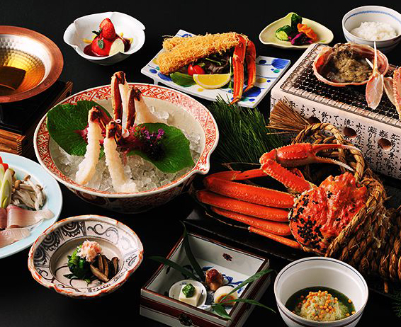
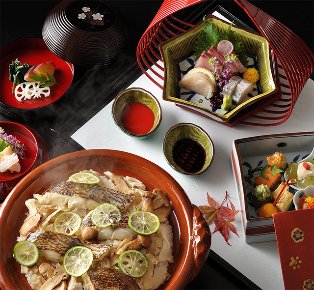
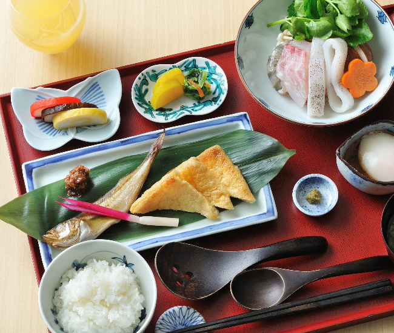

御料理
関東甲信越の恵み
部屋でお召し上がりいただけます

「蟹御膳」
蟹料理専門店である甲羅本店こだわりの定番会席コース。産地直送の蟹をふんだんに使用した蟹尽くしのコースをお楽しみ下さい。お刺身で、焼いて、蒸して、揚げてなど様々な蟹の味が盛り込まれています。お部屋でお楽しみ下さい。大部分が頭胸部からなる体は、背面全体が堅いキチン質の頭胸甲（甲羅）で覆われる。頭胸甲の前縁から一対の柄の付いた複眼が突き出し、通常はすぐ外側の溝（眼窩）に倒して収納できる。触角は2対あるがいずれも短い。第一触角は前に突き出して上に折れ、先端に小さな二枝がある。
「土鍋御膳」
関東甲信越の恵みをふんだんに使用したお鍋料理をお部屋でお楽しみいただけます。美味しい「ぼたん鍋」がいただける金沢の老舗旅館「銭がめ」。築300年の風情ある広間で、美味しい鍋料理や川魚など山里の味覚をふんだんに使った料理を提供しているおすすめのお食事処です。猪肉は臭みもなく、お肉の旨みを堪能することができます。岩魚塩焼きもおすすめですよ。宿泊はもちろん、立ち寄り湯やお食事のみの利用も可能なので、金沢へ訪れた際は美味しい鍋料理を食べに立ち寄ってみてはいかがでしょう。


「まるの朝食」
毎朝身だしなみに時間がかかり、朝ごはんを食べていないという方もいらっしゃるのではないでしょうか？でも、仕事・勉強・家事など一日を元気に頑張るためには、朝食をしっかり食べることが大切です。今回は、簡単＆時短の朝食レシピをご紹介。和洋のおかず＆汁物、ごはんやパンなど主食のアイデアレシピなどをいろいろ集めました。電子レンジやホットプレートなどコンロの火を使わないレシピも多数あります。一日の元気の源“お手軽簡単朝ごはん”でパワーチャージしませんか？
お食事処
-まる-
- お食事処◯／-まる-
- 営業時間 17:00~22:00(L.O ~21:30)
- ※ご宿泊以外のお客様もご利用いただけます。